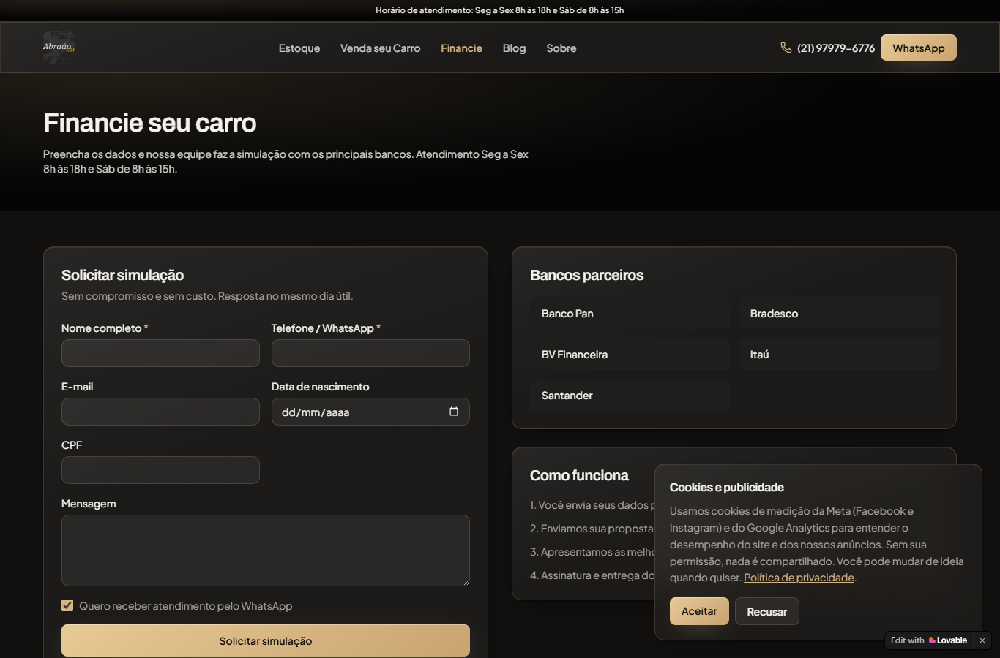
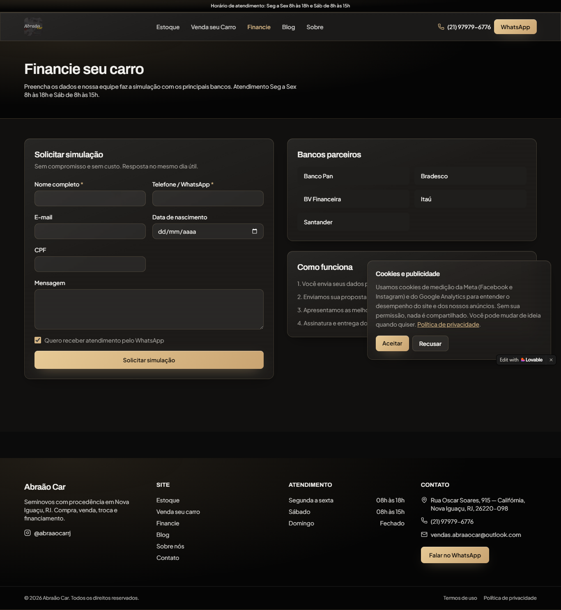

SIMIO · dossiê de candidato · campanha simio-20261119-174043-8bbc · gerado em 2026-11-19T21:22:03+00:00
https://abraaocar.com.br/financie
REVIEW_REQUIRED Prioridade MEDIUM · Cenário B_AMBIGUOUS_COMMUNICATION · Revisão humana: PENDING
Este dossiê apresenta indícios para apoio à auditoria. Não constitui conclusão regulatória. As conclusões automatizadas devem ser verificadas contra as evidências brutas abaixo (screenshots, catálogo e arquivos com hash). Conteúdo de terceiros é exibido como texto; links não são clicáveis por segurança.
A página analisada pertence à revenda de veículos 'Abraão Car' (abraaocar.com.br), que utiliza identidade comercial e visual próprias e apenas lista 'BV Financeira' em texto ao lado de outros bancos concorrentes (Pan, Bradesco, Itaú, Santander) na seção 'Bancos parceiros' para simulação de financiamento de veículos. Trata-se de menção comercial legítima em contexto multibancos, sem qualquer indício de confusão ou se passar por canal oficial da instituição.


| Ref | Tipo | Local | Conteúdo |
|---|---|---|---|
| E-URL | domain | url | URL final: https://abraaocar.com.br/financie (domínio: abraaocar.com.br) |
| E-DISC-001 | text | search_index | Índice de busca (grounding): abraaocar.com.br — **Quest Multimarcas** (`questmultimarcas.com.br` – página "Financiar") e **Abraão Car** (`abraaocar.com.br` – página "Financie seu carro") | **Evidência:** Lojas multimarcas que mantêm páginas exclusivas de simulação de financiamento com coleta de CPF, data de nascimento e telefone/WhatsApp, listando a **BV Financeira** em destaque como instituição financiadora parceira sem exibir aviso formal de correspondente bancário |
| E-SHOT-VIEWPORT | screenshot | viewport | evidence\C8b303db02b\attempt-1\viewport.png (sha256 98eee4f4d69828db…) |
| E-SHOT-FULL | screenshot | page | evidence\C8b303db02b\attempt-1\fullpage.png (sha256 54c96a624ecad0d1…) |
| E-TITLE | title | head | Financiamento de veículos — Abraão Car |
| E-META-1 | meta | head | description: Simule o financiamento do seu carro na Abraão Car. Trabalhamos com Pan, Bradesco, BV, Itaú e Santander — aprovação rápida em Nova Iguaçu, RJ. |
| E-META-2 | meta | head | og:title: Financiamento de veículos — Abraão Car |
| E-META-3 | meta | head | og:description: Simulação sem compromisso com os principais bancos do país. |
| E-HEAD-1 | heading | page | Financie seu carro |
| E-HEAD-2 | heading | page | Solicitar simulação |
| E-HEAD-3 | heading | page | Bancos parceiros |
| E-HEAD-4 | heading | page | Como funciona |
| E-HEAD-5 | heading | page | Abraão Car |
| E-HEAD-6 | heading | page | Cookies e publicidade |
| E-HDR | text | header | Horário de atendimento: Seg a Sex 8h às 18h e Sáb de 8h às 15h Estoque Venda seu Carro Financie Blog Sobre (21) 97979-6776 WhatsApp |
| E-FOLD | text | viewport (acima da dobra) | Horário de atendimento: Seg a Sex 8h às 18h e Sáb de 8h às 15h Estoque Venda seu Carro Financie Blog Sobre (21) 97979-6776 WhatsApp Financie seu carro Preencha os dados e nossa equipe faz a simulação com os principais bancos. Atendimento Seg a Sex 8h às 18h e Sáb de 8h às 15h . Solicitar simulação Sem compromisso e sem custo. Resposta no mesmo dia útil. Nome completo * Telefone / WhatsApp * E-mail Data de nascimento CPF Mensagem Quero receber atendimento pelo WhatsApp Solicitar simulação Bancos parceiros Banco Pan Bradesco BV Financeira Itaú Santander Como funciona 1. Você envia seus dados pelo formulário. 2. Enviamos sua proposta para os bancos parceiros. 3. Apresentamos as melhores condições de parcela e entrada. 4. Assinatura e entrega do veículo na nossa loja. Cookies e publicidade Usamos cookies de medição da Meta (Facebook e Instagram) e do Google Analytics para entender o desempenho do site e dos nossos anúncios. Sem sua permissão, nada é compartilhado. Você pode mudar de ideia quando quiser. Política de privacidade . Aceitar Recusar Edit with |
| E-FTR | text | footer | Abraão Car Seminovos com procedência em Nova Iguaçu, RJ. Compra, venda, troca e financiamento. @abraaocarrj SITE Estoque Venda seu carro Financie Blog Sobre nós Contato ATENDIMENTO Segunda a sexta 08h às 18h Sábado 08h às 15h Domingo Fechado CONTATO Rua Oscar Soares, 915 — Califórnia, Nova Iguaçu, RJ, 26220-098 (21) 97979-6776 vendas.abraaocar@outlook.com Falar no WhatsApp © 2026 Abraão Car. Todos os direitos reservados. Termos de uso Política de privacidade |
| E-NAV | nav | header | <https://abraaocar.com.br/> | Estoque <https://abraaocar.com.br/estoque> | Venda seu Carro <https://abraaocar.com.br/venda-seu-carro> | Financie <https://abraaocar.com.br/financie> | Blog <https://abraaocar.com.br/blog> | Sobre <https://abraaocar.com.br/sobre> | (21) 97979-6776 <tel:+5521979796776> | WhatsApp <https://wa.me/5521997725292?text=Ol%C3%A1!%20Vim%20pelo%20site%20e%20gostaria%20de%20mais%20informa%C3%A7%C3%B5es.> |
| E-CTA-1 | cta | page | Solicitar simulação |
| E-CTA-2 | cta | page | Aceitar |
| E-CTA-3 | cta | page | Recusar |
| E-CTA-4 | cta | page | Dismiss |
| E-CONTACT-1 | contact | header | (21) 97979-6776 <tel:+5521979796776> |
| E-CONTACT-2 | contact | header | WhatsApp <https://wa.me/5521997725292?text=Ol%C3%A1!%20Vim%20pelo%20site%20e%20gostaria%20de%20mais%20informa%C3%A7%C3%B5es.> |
| E-CONTACT-3 | contact | footer | @abraaocarrj <https://www.instagram.com/abraaocarrj/> |
| E-CONTACT-4 | contact | footer | (21) 97979-6776 <tel:+5521979796776> |
| E-CONTACT-5 | contact | footer | vendas.abraaocar@outlook.com <mailto:vendas.abraaocar@outlook.com> |
| E-CONTACT-6 | contact | footer | Falar no WhatsApp <https://wa.me/5521997725292?text=Ol%C3%A1!%20Vim%20pelo%20site%20e%20gostaria%20de%20mais%20informa%C3%A7%C3%B5es.> |
| E-IMG-1 | image | header (acima da dobra) | imagem alt='Abraão Car' src=https://abraaocar.com.br/__l5e/assets-v1/feb888d7-3a37-4c4e-8f78-34c1e4f174b1/abraao-car-logo.jpeg (44x44, acima da dobra) |
| E-TXT-001 | text | page | Horário de atendimento: Seg a Sex 8h às 18h e Sáb de 8h às 15h |
| E-TXT-002 | text | page | |
| E-TXT-003 | text | page | Preencha os dados e nossa equipe faz a simulação com os principais bancos. Atendimento Seg a Sex 8h às 18h e Sáb de 8h às 15h. |
| E-TXT-004 | text | page | Telefone / WhatsApp * |
| E-TXT-005 | text | page | Quero receber atendimento pelo WhatsApp |
| E-TXT-006 | text | page | Bancos parceiros |
| E-TXT-007 | text | page | Banco Pan |
| E-TXT-008 | text | page | BV Financeira |
| E-TXT-009 | text | page | 2. Enviamos sua proposta para os bancos parceiros. |
| E-TXT-010 | text | page | ATENDIMENTO |
| E-TXT-011 | text | page | Falar no WhatsApp |
| Dimensão | Sinal | Achado | Refs |
|---|---|---|---|
| VISUAL_IDENTITY | LEGITIMATE | A página utiliza identidade visual própria (tema escuro com detalhes dourados) e domínio próprio (abraaocar.com.br), sem imitar a identidade visual do Banco BV. | E-URL E-SHOT-VIEWPORT E-SHOT-FULL |
| DECLARED_COMMERCIAL_IDENTITY | LEGITIMATE | O estabelecimento identifica-se claramente como 'Abraão Car', loja de veículos seminovos localizada em Nova Iguaçu, RJ, no título, cabeçalho e rodapé. | E-TITLE E-IMG-1 E-FTR E-HEAD-5 |
| CORRESPONDENT_TRANSPARENCY | LEGITIMATE | Embora não exiba CNPJ ou declaração formal da Resolução CMN 4.935/2021 na página inspecionada, explica de forma transparente a jornada de intermediação ('Enviamos sua proposta para os bancos parceiros' e 'entrega do veículo na nossa loja') e lista 'BV Financeira' em um quadro de 'Bancos parceiros' ao lado de concorrentes (Banco Pan, Bradesco, Itaú, Santander). | E-HEAD-3 E-FOLD E-TXT-006 E-TXT-008 E-TXT-009 |
| INSTITUTIONAL_LANGUAGE | LEGITIMATE | A linguagem é claramente de uma revenda de veículos oferecendo simulação de financiamento com múltiplos bancos parceiros, sem qualquer alegação de ser canal oficial da instituição financeira. | E-META-1 E-TXT-003 E-FOLD |
| LOGO_USAGE | LEGITIMATE | Não há uso do logotipo do Banco BV; há apenas menção textual a 'BV Financeira' em formato de botão/etiqueta padronizada junto a outras instituições financeiras. | E-SHOT-VIEWPORT E-TXT-008 |
| SERVICE_JOURNEY | LEGITIMATE | O formulário propõe simulação de financiamento de veículos intermediada pela equipe da loja, sem oferta de serviços pós-venda típicos de canais oficiais do banco (como 2ª via de boleto ou quitação). | E-HEAD-2 E-FOLD E-CTA-1 |
| CONTACT_CHANNELS | LEGITIMATE | Os canais de contato (telefone, WhatsApp, endereço físico, Instagram @abraaocarrj e e-mail vendas.abraaocar@outlook.com) estão claramente vinculados à loja Abraão Car. | E-FTR E-CONTACT-1 E-CONTACT-2 E-CONTACT-3 E-CONTACT-5 |
| CONSUMER_CONFUSION | LEGITIMATE | Não há risco de o consumidor confundir a página com um canal oficial do Banco BV, tratando-se de divulgação legítima de opções de financiamento por loja multimarcas/multibancos. | E-TITLE E-SHOT-FULL E-FOLD |
A página analisada pertence à revenda de veículos 'Abraão Car' (abraaocar.com.br), que utiliza identidade comercial e visual próprias e apenas lista 'BV Financeira' em texto ao lado de outros bancos concorrentes (Pan, Bradesco, Itaú, Santander) na seção 'Bancos parceiros' para simulação de financiamento de veículos. Trata-se de menção comercial legítima em contexto multibancos, sem qualquer indício de confusão ou se passar por canal oficial da instituição.
Nenhum CNPJ ou razão social identificáveis no conteúdo coletado.
| Tipo | Valor | Ref | Contexto |
|---|---|---|---|
| domain | abraaocar.com.br | E-URL | |
| vendas.abraaocar@outlook.com | E-FTR | ||
| social_profile | https://www.instagram.com/abraaocarrj/ | E-CONTACT-3 | |
| phone | (21) 97979-6776 | E-HDR | |
| Índice de busca (grounding): abraaocar.com.br — **Quest Multimarcas** (`questmultimarcas.com.br` – página "Financiar") e **Abraão Car** (`abraaocar.com.br` – página "Financie seu carro") | **Evidência | E-DISC-001 | ||
| WhatsApp <https://wa.me/5521997725292?text=Ol%C3%A1!%20Vim%20pelo%20site%20e%20gostaria%20de%20mais%20informa%C3%A7%C3%B5es.> | E-CONTACT-2 | ||
| Falar no WhatsApp <https://wa.me/5521997725292?text=Ol%C3%A1!%20Vim%20pelo%20site%20e%20gostaria%20de%20mais%20informa%C3%A7%C3%B5es.> | E-CONTACT-6 | ||
| partnership_declaration | parceira | E-DISC-001 | **Evidência:** Lojas multimarcas que mantêm páginas exclusivas de simulação de financiamento com coleta de CPF, data de nascimento e telefone/WhatsApp, listando a **BV Financeira** em destaque como in |
| partnership_declaration | Bancos parceiros | E-FOLD | Nome completo * Telefone / WhatsApp * E-mail Data de nascimento CPF Mensagem Quero receber atendimento pelo WhatsApp Solicitar simulação Bancos parceiros Banco Pan Bradesco BV Financeira Itaú Santande |
Mapeamento indicativo para apoio à auditoria. Não constitui conclusão regulatória; a decisão definitiva pertence à auditoria.
Fonte: NORMATIVE
Art. 14. O contrato de correspondente deve estabelecer: [...] II - vedação à utilização, pelo contratado, de logomarca ou de outros atributos que sejam similares aos adotados pela instituição contratante em suas agências, postos de atendimento, sítio eletrônico na internet, aplicativo ou outras plataformas de comunicação em rede;
Hipótese: Uso de logomarca ou de atributos similares aos adotados pela contratante em seus canais. A norma disciplina correspondentes contratados; o responsável não foi identificado como correspondente.
Evidência observada: E-IMG-1
Informação faltante:
Fonte: NORMATIVE
Art. 14. O contrato de correspondente deve estabelecer: [...] III - divulgação ao público, pelo contratado, de sua condição de prestador de serviços à instituição contratante, identificada pelo nome com que é conhecida no mercado, com descrição dos produtos e serviços oferecidos e canais de contato da instituição contratante, inclusive de sua ouvidoria, em local visível, em destaque e em formato legível, por meio de: a) sítio eletrônico do correspondente na internet, acessível na página inicial; b) aplicativo e outras plataformas de comunicação em rede do correspondente; [...]
Hipótese: Há declaração da condição de correspondente/prestador, mas outros elementos da página (CONTACT_CHANNELS) podem contradizê-la ou reduzir seu efeito (destaque, legibilidade e identificação da contratante a verificar). A norma disciplina correspondentes contratados; o responsável não foi identificado como correspondente.
Evidência observada: E-CONTACT-2 E-CONTACT-6 E-DISC-001 E-FOLD E-FTR
Informação faltante:
Fonte: NORMATIVE
Art. 3º O correspondente atua por conta e sob as diretrizes da instituição contratante, que assume inteira responsabilidade pelo atendimento prestado aos clientes e usuários por meio do contratado.
Hipótese: Atendimento ao público prestado por meio do contratado em condições que podem não seguir as diretrizes da contratante. A norma disciplina correspondentes contratados; o responsável não foi identificado como correspondente.
Evidência observada: E-CONTACT-2 E-CONTACT-6 E-DISC-001
Informação faltante:
Se o responsável não for correspondente contratado, os indícios podem caracterizar uso indevido de marca ou fraude, fora do escopo da Res. 4.935: avaliar encaminhamento às áreas jurídica/segurança.
Limitações: requisitos contratuais/internos não fornecidos: mapeamento limitado ao texto normativo
| Fonte | Consulta / hipótese | URL original | Título / trecho |
|---|---|---|---|
| grounding | páginas de financiamento de veículos usando a marca Banco BV ou bv financeira mantidas por lojas, promotoras ou correspondentes bancários onde a marca do banco aparece em destaque principal, com simulador ou captação sem identificar claramente a condição de correspondente independente H2-product:financiamento de veículos | https://abraaocar.com.br/financie | abraaocar.com.br **Quest Multimarcas** (`questmultimarcas.com.br` – página "Financiar") e **Abraão Car** (`abraaocar.com.br` – página "Financie seu carro") | **Evidência:** Lojas multimarcas que mantêm páginas exclusivas de simulação de financiamento com coleta de CPF, data de nascimento e telefone/WhatsApp, listando a **BV Financeira** em destaque como instituição financiadora parceira sem exibir aviso formal de correspondente bancário |
Original: https://abraaocar.com.br/financie
Final: https://abraaocar.com.br/financie
| Artefato | Caminho | SHA-256 | Bytes |
|---|---|---|---|
| screenshot_viewport | evidence\C8b303db02b\attempt-1\viewport.png | 98eee4f4d69828dbbcb72b81bb9a7a818b4ac83ca4fbfd2cbe7c9cf69e70070a | 260083 |
| screenshot_full | evidence\C8b303db02b\attempt-1\fullpage.png | 54c96a624ecad0d190af3b485adc51eee33e9d7e7dc50cf9bad922aa257745d7 | 400771 |
| html | evidence\C8b303db02b\attempt-1\page.html.txt | 86e06258262941367e43428757e36e5d177519d707de07baa2464d0195df28d9 | 40347 |
| text | evidence\C8b303db02b\attempt-1\text.txt | 6c4c235296461515dfd622e9cf07ad71b88dc97cbc6afda976a4da32fc42add9 | 1576 |
| page_data | evidence\C8b303db02b\attempt-1\page.json | 64cbf12358d827dd4c3875fbc4bcd7c20588fc9cb5f2057928f0de461ff6d0d9 | 10429 |
| Quando | De | Para | Nota |
|---|---|---|---|
| 2026-11-19T18:10:11+00:00 | DISCOVERED | QUEUED | prioritised (score 1.0) |
| 2026-11-19T18:24:57+00:00 | QUEUED | COLLECTING | |
| 2026-11-19T18:25:09+00:00 | COLLECTING | COLLECTED | |
| 2026-11-19T18:25:09+00:00 | COLLECTED | ANALYZING | |
| 2026-11-19T18:25:38+00:00 | ANALYZING | COMPLETED |